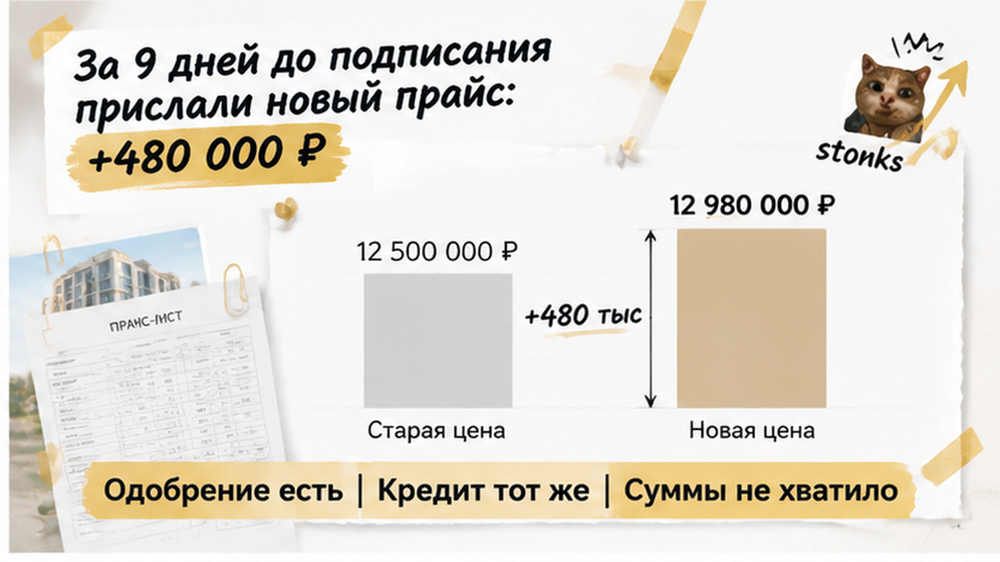
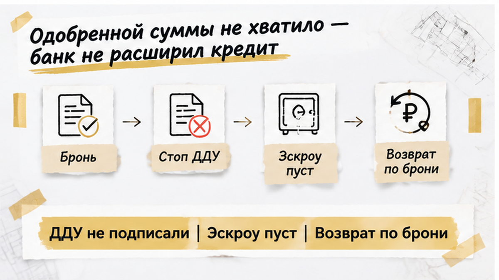
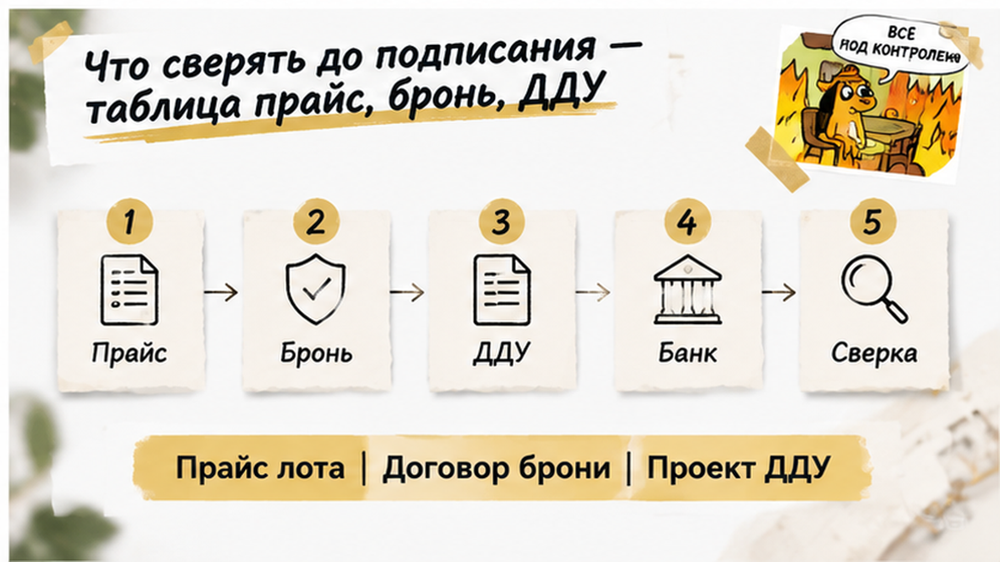

В Тюмени квартира перед подписанием ДДУ подорожала на 480 тысяч рублей — и семья с одобренной ипотекой остановила покупку до аванса. В сентябре 2026 года покупатели с детьми получили расчёт по действующему прайсу ЖК, оплатили бронь и рассчитывали закрыть стоимость своими накоплениями и кредитом. Пока проверяли объект, собирали документы и готовили эскроу, прошло несколько недель. До встречи в офисе продаж оставалось девять дней, когда пришёл новый прайс, а следом — проект договора долевого участия с другой ценой. Квартира осталась та же, банковское одобрение тоже, только денег на покупку теперь не хватало.
Расскажу изнутри, где расходятся банковское «да» и цена квартиры перед подписью. Разбираю такие покупки простым языком в Telegram и MAX — пока ещё можно пересчитать бюджет, а не искать деньги под подписанный договор.
В начале у семьи был вполне понятный расчёт менеджера: вот квартира, вот её стоимость, столько вносите сами, остальное берёте в кредит. Не приблизительное «от» из рекламы, а цифры по выбранному лоту. С ними можно было сесть и посчитать обычную жизнь после покупки: какой платёж выдержит бюджет и сколько накоплений уйдёт на первоначальный взнос.
Покупатели внесли плату за бронь, затем получили предварительное одобрение ипотеки. На бытовом языке это звучит как «всё, квартиру берём». Выбор сделан, свои деньги посчитаны, банк согласился — дальше будто бы остались документы и подписи. Именно здесь и хочется выдохнуть.
Но я в такой точке смотрю не на количество пройденных этапов, а на то, что именно подтверждено каждым документом. Банк одобрил определённую сумму кредита. Бронь закрепила договорённости с продавцом — какие именно, нужно читать в её тексте. Ни банковское решение, ни сам факт оплаты брони ещё не означают, что будущий ДДУ обязательно придёт с прежней ценой.
Для покупателя «забронировали квартиру» часто означает сразу всё: лот наш, стоимость наша, можно спокойно ждать. Для проверки сделки это отдельные вопросы. Квартиру сняли с продажи или ещё и зафиксировали цену? На какой срок? Что написано о пересмотре стоимости и возврате платы? Не нужно отвечать на них за продавца, даже если исходный расчёт выглядит убедительно.
У семьи между одобрением и подписанием шла обычная подготовка покупки новостройки: проверка объекта, пакет документов, подготовка эскроу. Это не один щелчок в банковском приложении. Покупатели уже держали в голове согласованные цифры, а договор с застройщиком ещё не был подписан.
В этом промежутке и разошлись два расчёта. У банка оставалась заявка с одной стоимостью квартиры, у отдела продаж появился обновлённый прайс. Одобрение кредита само по себе не замораживает цену у застройщика. Но и новый прайс не отвечает за условия ранее оформленной брони: если в ней есть обязательства по цене, их нельзя просто вычеркнуть из разговора.
Это не та история, где подорожала сама ипотека. В разборе повышения ставки накануне ДДУ семейный расчёт сломался из-за банковских условий. Здесь ставка не менялась и одобрение не отзывали. Дороже стала квартира — поэтому проверка только кредита не показала бы, сколько теперь нужно собственных денег.
Первый расчёт менеджера был основой подготовки, но не заменял будущий договор. Семья двигалась к назначенной дате с привычными цифрами, а на подпись ей предстояло получить уже другой документ. Расхождение стало видно не из разговоров о рынке, а из присланной стоимости конкретного лота.
Менеджер прислал обновлённый прайс, когда до подписания оставалось девять дней. Семья открыла расчёт: квартира та же, а стоимость другая. Следом — проект ДДУ, договора долевого участия, уже с новой ценой. Не просто предложение в переписке: именно эту сумму предстояло принять своей подписью.
Для покупателя всё до этого складывалось в понятную картину: выбрали квартиру, оплатили бронь, получили банковское одобрение. Раз деньги за резерв приняли, значит, можно готовиться к покупке по прежнему расчёту. Но «квартира за вами» и «цена за вами» — не одно и то же. Что именно закрепила бронь, нужно смотреть в её тексте: один факт оплаты этого не объясняет.
Здесь важна разница между бытовым ожиданием и проверкой сделки. Покупатель видит знакомый лот и думает о переезде. Я смотрю, совпадает ли сумма в предложении с той, которая попадёт в договор. Когда она меняется, весь прежний расчёт приходится открыть заново — даже если квартира, ставка и решение банка остались прежними.
На кухне семья пересчитывала таблицу расходов. Доплату нельзя было незаметно добавить к первоначальному взносу: свободных накоплений под неё не хватало. Нужно было понять, откуда вообще взять разницу, а не просто заменить одну цифру другой. Выбранная квартира ещё подходила семье, но покупка на новых условиях уже не помещалась в подготовленный бюджет.
Рекламная скидка или старый расчёт сами по себе этот разрыв не закрывают. Но и свежий прайс не отвечает на вопрос, какие обязательства застройщик уже принял по брони. Новую сумму нужно сопоставить с документами, а не молча считать неизбежной доплатой. Иначе обсуждение быстро сводится к одному: где покупателю срочно найти деньги.

Банковское «да» продолжало действовать, и это могло успокаивать. Ставку не подняли, одобрение не отозвали — вроде бы со стороны ипотеки ничего не сломалось. Только банк рассматривал заявку с определённой суммой кредита. Обновление прайса застройщика не означало, что покупателю автоматически выдадут больше.
В исходном расчёте были две части: собственный взнос и деньги банка. Вместе они покрывали прежнюю стоимость квартиры. Теперь между ними и ценой в проекте ДДУ появилась недостача. Действующее одобрение не закрыло её: кредит остался в прежнем размере.
Обычный взгляд на эту ситуацию — «ипотека ведь уже одобрена». Профессиональный вопрос другой: хватит ли одобренной суммы и своих денег именно на этот договор? Это не придирка к формулировке банка. От ответа зависит, сможет ли семья выполнить обязательства, под которыми собирается подписаться.
Вариантов оставалось немного: искать доплату из своих, добиваться нового решения банка или отказываться от подписания. Ни увеличение кредита, ни продление брони нельзя было заранее считать решённым вопросом. А согласиться на новую цену сейчас, надеясь разобраться с деньгами потом, — значит принять обязательство раньше, чем появился понятный способ его оплатить.
В истории о семейной ипотеке, которую одобрили, но эскроу не открыли покупка остановилась на другом участке. Здесь важно то же различие: одобрение — ещё не завершённая сделка. Деньги по ДДУ перечисляют после регистрации договора, а не автоматически вслед за банковским «да».

Семья отказалась подписывать ДДУ по новой цене. До аванса за квартиру не дошли, деньги на эскроу не перечисляли. Плата за бронь к этому моменту уже была внесена — и с ней остался отдельный спор. Поэтому говорить «вышли без потерь» здесь нельзя: вопрос возврата нужно решать по договору бронирования.
Это не радостный финал с ключами. Выбранная квартира, потраченное время, одобрение банка — всё это было, а покупки не состоялось. Но уже оплаченная бронь не стала причиной согласиться на неподъёмную стоимость квартиры. Семья не приняла новый расчёт только ради того, чтобы довести начатое до конца.
Ипотеку уже одобрили, но перед ДДУ квартира подорожала на 480 тысяч — вы бы доплатили из своих или отказались от сделки, даже рискуя потерять плату за бронь?

Покупатель обычно смотрит на итог: «Сколько своих денег и какой платёж?» Я при сопровождении смотрю ещё и на то, из каких документов получился этот итог. Расчёт может быть верным сам по себе, но уже не подходить к договору, который прислали на подпись. Поэтому прайс, бронь, последнюю версию ДДУ и решение банка нужно положить рядом — по одному лоту, с датами, а не вперемешку со старыми предложениями.
| Что сверить | Где смотреть | Что можно пропустить |
|---|---|---|
| Прайс: цена именно вашего лота, дата, срок скидки и способ оплаты | Письменное предложение и сохранённая переписка с отделом продаж | Сумма уже не действует или рассчитана на другие условия покупки |
| Бронь: закрепляет цену или только резервирует квартиру; срок, получатель платы, возврат | Договор бронирования, приложения и документ об оплате | Квартиру сняли с продажи, но стоимость не зафиксировали; плату могут удержать |
| ДДУ: полная стоимость, характеристики квартиры, порядок оплаты и изменения суммы | Последний проект договора со всеми приложениями | На подпись пришла другая цена или условие о доплате |
| Ипотека: размер кредита, взнос, ставка, срок одобрения и дополнительные условия | Решение банка и подготовленные кредитные документы | Кредит не покрывает новый расчёт, потребуется больше своих денег или пересогласование |
По статье 5 закона № 214-ФЗ цена определяется в ДДУ. Новый прайс отдела продаж сам по себе не означает, что можно переписать стоимость в уже заключённом договоре. Здесь же до подписания прислали проект с другой суммой. А бронь — отдельный договор, не ДДУ: её условия нельзя угадывать по квитанции об оплате.
Если цифры расходятся, я бы сначала запросил письменное объяснение у застройщика и ответ банка по новому расчёту. Старое предложение и переписку при этом не удалял бы: они нужны для сопоставления условий. При смене юрлица застройщика перед ДДУ сверять приходится уже не только цену. А когда срок передачи ключей перенесли, а деньги находятся на эскроу, положение покупателя другое — это не этап выбора, подписывать ли предложенный проект.
Рассказываю изнутри, где расчёт покупки расходится с документами: Telegram и MAX. Таблицу можно сохранить к встрече в офисе продаж — чтобы сравнивать бумаги, а не вспоминать разговор.
Отменять назначенное подписание неприятно. Особенно когда дома уже привыкли к мысли о переезде, а на подготовку ушли недели. Но дата в календаре не обязывает принимать любой новый бюджет. До подписи остаётся место для спокойного решения: запросить прежние условия, пересчитать покупку или выбрать другой лот — без обещания, что застройщик обязательно уступит.
Моя задача на этом этапе — не уговорить «дожать сделку», а помочь понять, на что действительно хватает денег и под чем предстоит подписаться. Такие расхождения лучше разбирать дома по файлам, пока ещё можно взять паузу, а не в офисе с открытым договором перед собой.